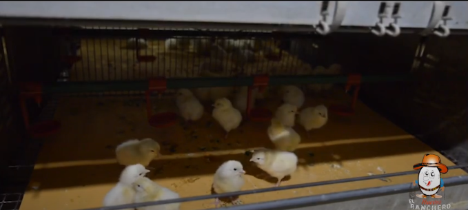
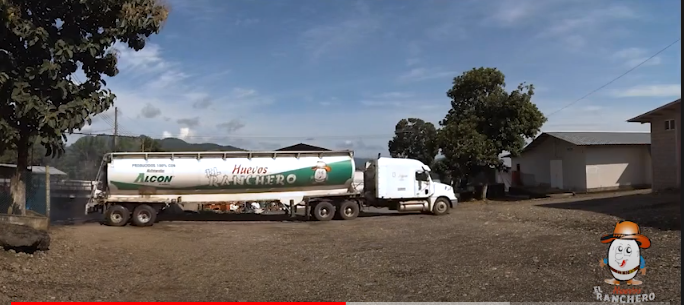
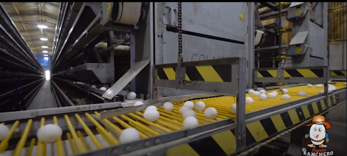
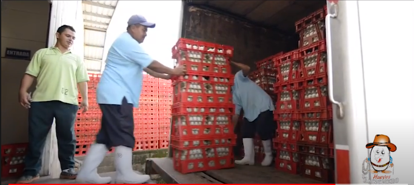
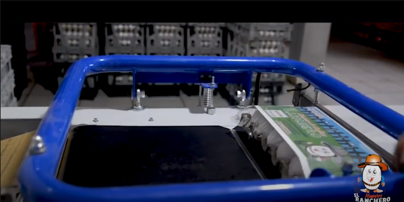

HISTORIA
Huevos El Ranchero
Breve Historia
Granja Avicola las Delicias es una empresa que se consolido como empresa industrial hace 7 años en el área de alimentos, sin embargo inicio sus actividades hace 18 años como granja artesanal, hoy en día es una operación dedicada a la producción de huevos comerciales. La granja esta estratégicamente ubicada en la comunidad de cañaveral, peñablanca, Cortés, Bolivia a una distancia de 71.5 km km. del centro de la ciudad y los mercados de consumo.
El año xxxx iniciamos actividades con una producción anual de 12,500,000 huevos, que eran comercializados localmente, actualmente nuestro producto es comercializado a nivel nacional en la cadena de la industria alimenticia.
Debido a que la alimentación representaba un 80 % del costo de producción, nos trazamos como objetivo cerrar contratos anuales de provisión de las principales materias primas con empresas agropecuarias solidas, como lo es Cargil.
Misión

Somos una empresa eficiente, productora de pollos y huevos que busca satisfacer las necesidades de nuestros clientes con nuestros productos de exelente calidad y con precios justos y cómodos, con el apoyo de un personal capacitado, responsable y dedicado.
Visión

Seremos una empresa reconocida a nivel internacional en el mercado avícola por medio del mejoramiento productivo y de gestión de calidad de acuerdo a las exigencias del mercado, contribuyen al desarrollo económico de los diferentes sectores aledaños apoyándolos siempre en los principios éticos y morales.
Valores

Responsabilidad: responder opotunamente con los servicios ofrecidos .
Honestidad: asegurar coherencia entre la misión y visión.
Compromiso: tener convicción de los beneficios que trae el desempeño responsable de las tareas a cargo.
Respeto: fundamentar los actos en el respeto a la diferencia de pensamiento y opinión, manifestando consideración hacia los demás.
Trabajo en equipo: unir esfuerzos para trabajar dinámicamente en pro de satisfacer a nuestros clientes.
Calidez: nuestro recurso humano refleja el amor, vocación y gusto propio por el trabajo.
Responsabilidad Social

Cumple adecuadamente y en la fecha establecida las remuneraciones a sus trabajadores, propiciando asi que sus colaboradores se sientan comodos con la empresa y el trabajo que realizan.
Para con los choferes de sus unidades otorga incentivos economicos a los que utilizan de forma adecuada el combustible proporcionado para una ruta.
Brinda asesoría técnica a los distribuidores finales en la concerniente a la atención del público, y de como incrementar sus ventas,además de otorgarles algunos obsequios como: huevos, juquetes, etc.
Cuentan con un sistema tecnificado de bebederos para sus animales que evita el desperdicio de agua. Implementando reas verdes en gran parte de sus instalaciones, como incentivo para preservar el medio ambiente. Reduciendo las emisiones de carbono en todas las unidades de transporte, brindando un mantenimiento adecuado.
Objetivos de Calidad
Aumentar la satisfacción del cliente ofreciendo productos de alta calidad que cumplen con estándares de producción.
Asegurar un buen manejo del producto para preservar sus características naturales.
Gestionar y asegurar los recursos para la implementación, mantenimiento y mejora.
Seleccionar y evaluar los proveedores que impactan en nuestro producto final y asegurar la calidad de los insumos.
Desarrollar el talento humano con el programa de capacitación general de la compañía.

Inicio